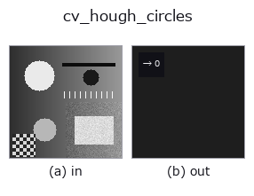

features op• Data kinds: image → feature
• Call: fullseye.apply(img, "cv_hough_circles", a=0.5, b=0.5) (2-D model = एक image + दो scalar knobs a,b∈[0,1])
• HALCON समकक्ष: hough_circles (अर्थ और parameters समझने के लिए HALCON reference उपयोगी है)

*Figure synthetic 128×128 input पर सच में चलाकर मिला output है। बाईं ओर input, दाईं ओर output। Point clouds ऊपर से देखे गए scatter के रूप में (brightness = z), 1-D series line के रूप में, volumes z दिशा में maximum-intensity projection के रूप में, videos बीच के frame के रूप में, complex images amplitude के रूप में, और जो return values चित्र नहीं बन सकते वे स्वयं values के रूप में दिखाए जाते हैं।*
*Knob a output नहीं बदलता (मापा गया: 0.1 / 0.5 / 0.9 पर एक जैसा)।*
*Knob b output नहीं बदलता (मापा गया: 0.1 / 0.5 / 0.9 पर एक जैसा)।*
Hough transform से circle detection (1 scalar feature, OpenCV implementation)। Edge की gradient जानकारी इस्तेमाल करने वाली HOUGH_GRADIENT विधि से वृत्त का केंद्र और radius voting से पहचानता है —— यहाँ केवल पहचाने गए वृत्तों की संख्या लौटाता है (0 हों तो 0)।
> नीचे का विस्तृत विवरण मूल text में है — सारांश और headings का अनुवाद हो चुका है।
HALCON の hough_circles(Detect centers of circles for a specific radius using the Hough transform.)に相当(近似。中心座標ではなく本数のみ)。実装は cv2.HoughCircles(_u8(v), HOUGH_GRADIENT, dp=1, minDist=10+int(a*20), param1=100, param2=20+int(b*20), minRadius=3, maxRadius=20) —— a は検出する円同士の最小中心間距離を 10〜30 に、b は中心検出の投票しきい値 param2(小さいほど誤検出が増える)を 20〜40 に振る。param1(内部の Canny 高しきい値)と半径範囲(3〜20)は固定。
• gallery2d_features family guide
• Sample data catalog (DL URL / license) — 2-D के लिए skimage.data (BSD/public) + synthetic, 3-D के लिए real data sources (Stanford/PDS आदि) के DL URL।
• Operators का स्रोत और संदर्भ — इस op family के मूल research/methods के स्रोत।
• Algorithm का मानक स्रोत (लेखक, वर्ष) और उपयोग ऊपर की family usage guide में दिए गए हैं।
नीचे का program सच में चलता है, यह जाँचा गया है (figure वाला ही input)। Studio की help में यह block buttons बन जाता है, जिनसे इसे वहीं load करके चलाया जा सकता है।
cv_hough_circles 0.50 0.50
▸ यह pipeline load करें · Load करके चलाएँ
• gallery2d_features — py -3.11 examples/gallery2d_features.py
feature को input के रूप में लेते हैं)features)effective_bit_depth · blob_count · area_frac · count_contours · total_length · vol_count · sk_euler · sk_entropy_feat
*Provenance: ops.py — 2D operator registry. यह per-op note tools/opdocs.py md से अपने-आप generate होता है (हाथ से edit न करें)।*
© 2026 Kazufumi Furuse — Fullseye operator documentation. Licensed under Apache-2.0.